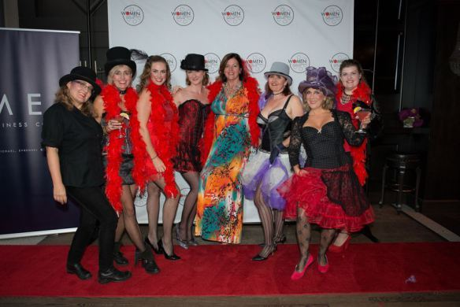
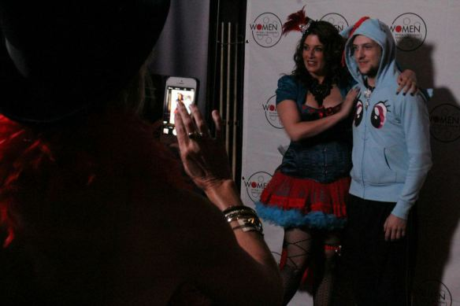
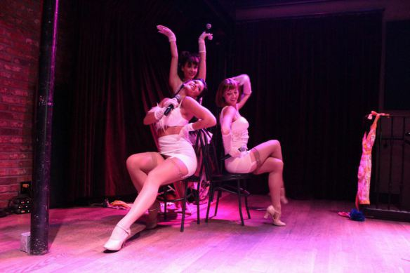
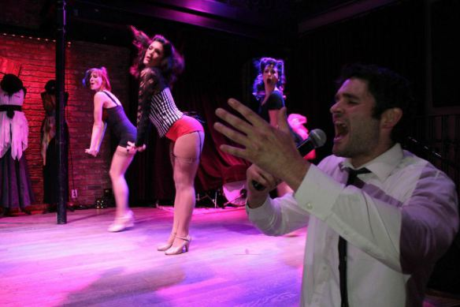
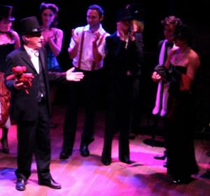
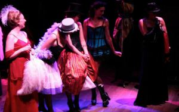
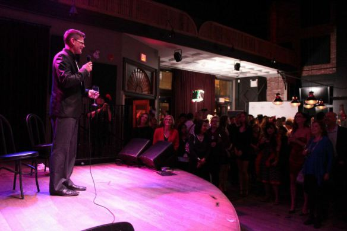

Fashion flared at WIFTV's Moulin Madness party
The WIFTV Moulin Madness Organizers – Wendy D Photography
Fashion flared last night at Women in Film and Television Vancouver’s latest edition of Martini Madness- officially launching the Vancouver Film Festival’s industry conference with utter magnificence. The Vancouver Fan Club became Moulin Rouge for the night, and I’m sure they will be finding feathers and sparkles in random crevices for many years to come.
Emcee Nicole Oliver ruled the night
The Master of Ceremonies made a simple tap of her finger to her phone before the show. With that, her celebrity became quite evident. That one tweet of her outfit from Lace Embrace generated a flutter of tweets by little pony avatars who rejoiced at the possibility of cosplay interpretations that this image may inspire.
Yes, Nicole Oliver has quite a following, and they donned their fanciest pony hoodies on the red carpet for a chance to get an autograph from Princess Celestia.
Far from a one trick pony, Nicole slid in and out of dozens of hilarious voices whenever they were applicable to her sharp wit. A master of the use of reverb, most effective of all was her commanding "mumma shush" that caused a wave of attention to wash over the crowd. Often breaking into spontaneous song throughout the night, her love of the stage was contagious as it beamed from every pore.
host Nicole Oliver with a fan
The True Heroines – Femmes Fatales on stage
The True Heroines on stage – from left: Paula Giroday, Jovanna Huguet, Fiona Vroom.
The cabaret really heated up once The True Heroines took to the stage with their sizzling performance skills and vibrant voices. Expertly choreographed and sinfully attired, the crowd didn’t know what hit them. This is especially true for the few attendees incorporated into the routine that were treated to the lap dance of their lives.
The True Heroines and a hero – from left: Fiona Vroom, Paula Giroday, Jovanna Huguet and George Hutton
As far as performers go, these ladies are the real deal and they beautifully encapsulate a modern interpretation of what "woman" can mean- including a divine sense of humour.
Chloë Angus’ Best Dressed Competition
The cabaret was filled to the brim with dazzling renditions on the theme. Designer Chloë Angus was tasked with choosing the Best Dressed winners. "This puts me in the very difficult category of choosing one man- not something I’m good at." She decided on "Phillip" because "everyone likes a gentleman." The best dressed woman was awarded to "Jennifer" because "those Fluevogs will get you in any door."
Obviously this was an event we will file away into our happy memory books. What a great way to celebrate WIFTV’s 25th anniversary year! Thanks to everyone who made it happen and especially to all of the beautiful people who showed up and sparkled into such a feast for the eyes.
Three new WIFTV & Partners mentorships
Ed Brando from William F. White on stage
Three mentorships were announced this year with our partners: the Vancouver Film Festival, the Whistler Film Festival and William F White’s. Ed Brando announced that White’s Production Manager Mentorship is now accepting applications.
This year’s silent auction was wildly successful, raising big money for WIFTV programming thanks to a slew of very generous sponsors.
Hope to see you again, next year!
By Arwen Hunter